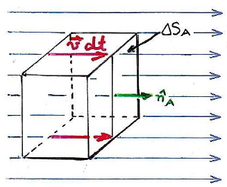

Antes de começarmos a estudar de fato a lei de Gauss, precisamos ter em mente duas coisas: O conceito de fluxo elétrico é introduzido e para entender tal conceito, é necessário refletir sobre o que é fluxo.
Mas então... Qual seria a definição de fluxo??
Podemos entender fluxo como a taxa com que um fluxo escoa através de uma superfície,ou seja, é o volume por unidade de tempo.
Suponha uma região do fluido onde a velocidade é $\vec{v}$. Então, o volume que atravessa a superfície $\Delta S_A$ durante o intervalo de tempo $dt$ é o volume $dV$ contido no cubo:\color{red}\fbox{\color{black} $dV = v\; dt\; \Delta S_A$}
